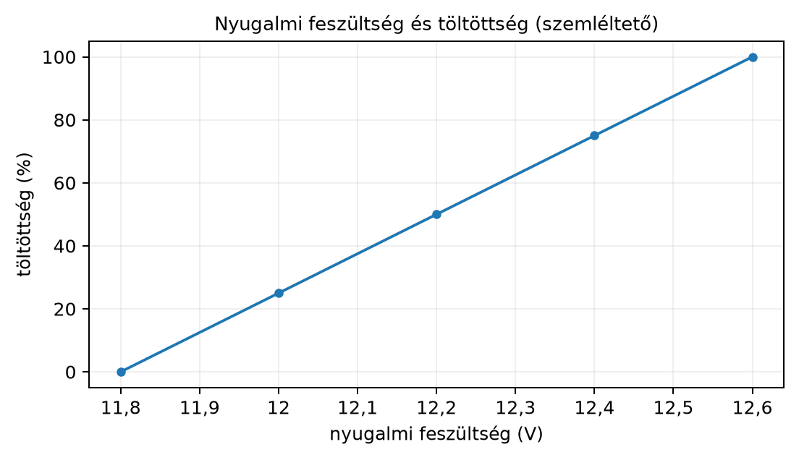

Egy hideg téli reggelen az ügyfél azt panaszolja: „Elfordítom a kulcsot, csak kattog, és a műszerfal is elsötétül.” A műhelyben az első lépés az akkumulátor állapotának felmérése. Ha rosszul választjuk ki az új akkumulátort, a jármű télen megbízhatatlan, a start-stop rendszer hibát jelez, vagy a generátor és az elektronika terhelése megnő. Ha rosszul töltjük, a fejlődő durranógáz robbanhat, a sav sérülést okoz. Ezért az indítóakkumulátor felépítését, adatait, kiválasztási és töltési szabályait pontosan kell ismernünk.
Képzelj el egy hatkamrás műanyag dobozt, amelynek tetején két pólus
van: a pozitív (30 jelű kapocs) és a negatív
(31/test). A dobozban hat darab, sorba kötött cella van;
mindegyikben ólom (Pb) alapú negatív lemezek és ólom-dioxid (PbO₂)
pozitív lemezek váltakoznak, közöttük porózus szeparátor, és az egészet
híg kénsavas elektrolit járja át. Mindegyik cella nyugalmi feszültsége
kb. 2,1 V, a hat cella soros kapcsolása adja a 12 V-os fedélzeti
feszültséget. A cellák fölött gázelvezető csatornák vannak; a szelepes,
gondozásmentes kivitelekben a gáz nyomása kis szelepen keresztül
szabályozottan távozhat.
Definíció. Az indítóakkumulátor (starter akkumulátor, „savas ólomakkumulátor”) nagy hidegindító áram leadására tervezett, hatcellás, névlegesen 12 V-os ólomakkumulátor, amely a belső égésű motor indításához, valamint a jármű villamos fogyasztóinak ellátásához tárol energiát.
Definíció. A névleges kapacitás (, mértékegysége amperóra, Ah) azt a töltésmennyiséget adja meg, amelyet a teljesen töltött akkumulátor húsz óra alatt, állandó árammal kisütve lead, miközben a cellafeszültség nem csökken a megadott kisütési zárófeszültség alá. A szokásos jelölés például „70 Ah”, ami 20 órás kisütésre vonatkozik.
Definíció. A hidegindító áram (hidegindítási áram) azt a legnagyobb áramot jelenti, amelyet az akkumulátor hideg körülmények között rövid ideig képes leadni. Az európai EN szabvány szerint (EN 50342-1) a mérés jellemzően –18 °C-on történik: az akkumulátornak meghatározott ideig adott áramot kell leadnia, miközben a kapocsfeszültség nem eshet egy előírt zárófeszültség alá (gyakori példaérték: 10 s-ig, minimum 7,5 V – ellenőrizendő: az aktuális szabvány szerinti érték). Az adattáblán például „540 A (EN)” jelölés szerepel.
A nyugalmi feszültség és a töltöttségi szint összefüggése hozzávetőlegesen az alábbi (szemléltető, szobahőmérsékletű, legalább 4–12 óra pihentetés utáni, egészséges akkumulátorra):

A grafikon szemléltető, szobahőmérsékletű, legalább 4–12 óra pihentetés utáni, egészséges akkumulátorra vonatkozik, és nem lineáris pontosságú; rendszerint 12,6 V fölött az akkumulátor teljesen töltött, 12,2 V körül kb. 50%-os, 12,0 V körül kb. 25%-os, 11,8 V alatt pedig gyakorlatilag lemerült. Az értékek függenek a hőmérséklettől, a savsűrűségtől és az akkumulátor korától, ezért a gyártói adat mindig elsőbbséget élvez.
Az Elektrokémia: elektrolízis, galvánelemek, akkumulátorok és korrózió alfejezetben láttuk: kisütéskor a negatív ólomlemez és a pozitív ólom-dioxid lemez ólom-szulfáttá alakul, miközben az elektrolit kénsavtartalma csökken és víz keletkezik. Töltéskor a folyamat visszafordul, az elektrolit sűrűsége nő. Az indítóakkumulátorban ez a reakció játszódik le minden egyes cellában.
A cellafeszültség nem állandó: teljesen töltött cella nyugalmi feszültsége kb. 2,1 V, kisütés közben csökken, töltés közben nő, a töltés végén a gázfejlődés miatt emelkedik. A hat soros cella eredő nyugalmi feszültsége tehát kb. . Ha a cellák savsűrűsége eltér, például víz utánpótlás hiánya vagy zárlat miatt, a cellafeszültségek is eltérnek, és az akkumulátor kapacitása csökken.
A hagyományos, sík-lemezes indítóakkumulátor celláiban vékony ólomrácsokra hordják fel az aktív anyagot – a negatív lemezen szivacsos ólmot, a pozitív lemezen ólom-dioxidot. A lemezeket bordázott vagy mikroporózus szeparátor választja el, amely megakadályozza a belső rövidzárat, de átengedi az ionokat. Az elektródalemez-kötegek párhuzamosan kapcsolódnak a cellán belül, így a hidegindító áram nagy lehet. A cellákat nehéz, saválló műanyagból készült ház választja el, alul iszapteret képeznek, hogy a lehulló aktív anyag ne zárja rövidre a lemezeket.
A kivágott rajzon a hat sorba kötött cella, a váltakozó pozitív (ólom-dioxid) és negatív (szivacsos ólom) lemezek, a szeparátorok, a lemezcsoport-hidak, a válaszfalon átmenő cellaösszekötők, a pólusok, a központi gáztalanítás lángzárral és alul az iszaptér látható; a betét az AGM-cella üvegszálas, felitatott szeparátorát mutatja.
A spirálcellás savas ólomakkumulátor hasonló kémiai elven működik, de a pozitív és negatív lemezeket vékony szalagként, szeparátorral együtt csigaszerűen, hengeres cellákba tekercselik. Ezzel nagyobb felületet pakolnak kis térfogatba, ami nagyobb hidegindító áramot, jobb rezgésállóságot és hosszabb élettartamot eredményezhet. A spirálcellás kivitel elsősorban a mélykisülést és a rázást tűrő kiviteleknél terjedt el; indítóakkumulátornál ritkább, de egyes márkacsaládokban előfordul.
A gondozásmentes akkumulátorok lemezeit kalcium-ón ötvözetű rácsra viszik fel, ami csökkenti a vízveszteséget, így az elektrolitot nem kell utántölteni, a fedél labirintusos gázelvezetése és lángzáró betétje pedig visszavezeti a párát és elvezeti a gázt. A szelepszabályozott (VRLA) zárt kivitel az AGM-akkumulátor jellemzője.
A modern start-stop rendszerű járművekben a motor gyakran leáll és újraindul, miközben a fogyasztók (klíma, rádió, világítás) továbbra is az akkumulátorból kapnak energiát. Ezért nagyobb ciklusállóságú akkumulátor kell.
Definíció. Az EFB akkumulátor (Enhanced Flooded Battery, javított folyékony elektrolitos akkumulátor) olyan ólomakkumulátor, amelyben a folyékony elektrolit mellett megerősített lemezfelépítést, speciális szeparátort és javított aktív anyagot alkalmaznak a nagyobb ciklusszám és a mélyebb kisütés elviselésére. Jellemzően a belépő szintű start-stop rendszerekhez és nagyobb fogyasztási igényű járművekhez használják.
Definíció. Az AGM akkumulátor (Absorbent Glass Mat) üvegszálas szeparátorba itatott elektrolitos, szelepes ólomakkumulátor (VRLA – Valve Regulated Lead Acid). Az elektrolit nem folyadék formában, hanem a szeparátorban kötött állapotban van, ezért az akkumulátor nyitott kivitelnél nem folyik ki, jól bírja a rázkódást, a mélykisülést és a gyakori töltés-kisütés ciklust. Ezeket a járműgyártók a start-stop és visszanyerő (rekuperációs) fékenergiás rendszerekhez, valamint nagyobb energetikai igényű motorokhoz írják elő.
Szabály. A járműbe mindig a gyártó által az adott típushoz, motorhoz és felszereltséghez előírt akkumulátort szabad beépíteni. Start-stop rendszerű járműbe hagyományos, nem EFB/AGM akkumulátor beépítése nem megengedhető; a rossz típus gyors lemerülést, hibakódot, komfort- és indítási hibát okozhat.
Az akkumulátor cseréjekor a helyes méret, pólusállás, lábrögzítés is fontos. Az adatok a gyártói javítási útmutatóban, a pótalkatrész-katalógusban vagy a műszaki adatlapon találhatók. A például „12 V 70 Ah 620 A (EN) AGM” felirat jelenti: névleges feszültség, kapacitás, hidegindító áram, technológia.
Az akkumulátor belső ellenállása () tipikusan néhány milliohm–néhány tíz milliohm. Terheléskor a kapocsfeszültség a belső ellenállás miatt csökken:
ahol az üresjárati (nyugalmi) feszültség, a terhelő áram, a belső ellenállás.
Ez a képlet magyarázza, miért esik le a feszültség indításkor. Például ha a nyugalmi feszültség 12,6 V, a belső ellenállás 0,008 Ω, és az önindító 180 A-t vesz fel, a kapocsfeszültség kb. . Ez a feszültségesés normális; ha a belső ellenállás megnő (öregedés, szulfátosodás, savrétegződés), a feszültség erősebben letörik, és az indítómotor lassan forgat.
A nyugalmi feszültség méréséhez az akkumulátort terhelés nélkül, a motor leállítása után legalább néhány órával, stabil hőmérsékleten kell vizsgálni. A méréshez a gyújtást lekapcsoljuk, a fogyasztókat kikapcsoljuk.
Az akkumulátor töltésére leggyakrabban három módot használunk; a gyakorlati töltők gyakran kombinálják ezeket.
Fagyott akkumulátort tilos tölteni; előbb szobahőmérsékletre kell melegíteni, és szemrevételezni kell (repedés, savszivárgás).
A gyorstöltés nagyobb árammal (pl. 20–40 A) csak rövid ideig, ellenőrzött feszültséghatárokkal és a gyártó engedélyével alkalmazható. AGM akkumulátort csak arra alkalmas, a felső feszültséget pontosan korlátozó töltővel szabad tölteni; a hagyományos, magas végfeszültségű gyorstöltő tönkreteszi az AGM cellákat.
Az akkumulátor kiválasztásakor a következő adatokat kell egyeztetni a jármű követelményeivel:
A modern járművek fedélzeti energiamenedzsmentje (BEM – Battery Energy Management) érzékeli az akkumulátor állapotát, a hőmérsékletét, a töltöttségét és a belső ellenállását. Új akkumulátor beépítése után a jármű elektronikájába regisztrálni kell a csere tényét és az új akkumulátor adatait – diagnosztikai műszerrel, a gyártó által előírt eljárással. Enélkül a vezérlő a régi, elöregedett akkumulátor paramétereivel dolgozik tovább, hibás töltési stratégiát alkalmazhat, és az akkumulátor idő előtt tönkremehet. A regisztrálás nem jelenti az akkumulátor „kódolását”, hanem a fedélzeti hálózat vezérlőjének tájékoztatását (a pontos eljárás márkánként eltér – ellenőrizendő: gyártói előírás).
Figyelem. Az ólomakkumulátor elektrolitja híg kénsav. Savfröccsenés a bőrön maró sérülést, szemben súlyos szemsérülést okoz. Az akkumulátor közelében mindig viseljünk saválló védőkesztyűt, védőszemüveget és védőruhát; savas szembe jutáskor azonnal bő vízzel öblítsünk és forduljunk orvoshoz.
Figyelem. Töltés közben – különösen túltöltéskor – az akkumulátor durranógázt (hidrogén–oxigén keverék) fejleszt. Nyílt láng, szikra, forrasztólámpa, cigarettázás, elektromos szikrázás tilos az akkumulátor közelében. A töltőt csak kikapcsolt állapotban szabad rákötni és lekötni, így elkerüljük a szikraképződést.
Figyelem. Fagyott, megrepedt vagy savat szivárogtató akkumulátort tilos bikázni vagy tölteni – robbanásveszély; előbb szobahőmérsékletre kell melegíteni és szemrevételezni. Csak azonos névleges feszültségű rendszereket köss össze; mindkét járműben legyen kikapcsolva a gyújtás és a fogyasztók. Ha a gyártó külső indítási pontot (pozitív segédindító csatlakozót, testpontot) jelöl ki, azt használd (ellenőrizendő: kezelési útmutató). Hibrid és elektromos jármű 12 V-os segédindítása csak a gyártói eljárás szerint végezhető; a nagyfeszültségű rendszeren nem végzünk munkát.
Bikázás (segédindítás) sorrendje. A lemerült jármű mellé a segítő járművet úgy kell állítani, hogy az akkumulátorok ne érjenek össze, és a segítő jármű motorja álljon. A csatlakoztatás sorrendje:
30).31).A motor beindítása után a kábeleket fordított sorrendben kell lekötni, először a fekete testkábelt, végül a pozitív kábeleket. Az egész folyamat alatt tilos a két jármű karosszériájának összeérni.
Az ábrán a számok a csatlakoztatás sorrendjét jelölik; a piros kábel folytonos vastag, a fekete szaggatott vonal. Az áthúzott jel a tilos bekötési pontot mutatja (a lemerült akkumulátor negatív pólusa). Az interaktív változatban a négy csatlakoztatási és a négy lekötési lépés egyenként léptethető.
Környezetvédelem. Az elhasznált ólomakkumulátor veszélyes hulladék: ólmot, ólom-vegyületeket és kénsavat tartalmaz, ezért nem kerülhet a háztartási hulladékba, csatornába vagy a környezetbe. A műhelyben az elhasznált akkumulátort saválló, zárt edényben, a többi hulladéktól elkülönítve kell tárolni, és hulladékkezelőnek, illetve kötelezően visszaváltó kereskedőnek átadni. A gyűjtést és nyilvántartást a veszélyes hulladékokra vonatkozó hatályos hazai jogszabályok szerint kell végezni (ellenőrizendő: hatályos hulladékjogi szabályozás). Az ólom újrahasznosítható, a sav semlegesíthető; a kereskedelemben elterjedt betétdíjas visszaváltás is ezt segíti.
Példa (kapacitás értelmezése). Egy akkumulátor
adattábláján 70 Ah szerepel. Mekkora az a kisütő áram,
amelynél a 20 órás kisütés pontosan ezt a kapacitást adja?
Adott: , . Keresett: (A). Képlet: , tehát . Válasz: a 20 órás kapacitás 3,5 A állandó árammal mérve 70 Ah. Ez nem jelenti azt, hogy 70 A-t egy órán át le lehet venni – a nagyobb áram hatására a valós kapacitás csökken.
Példa (terhelés alatti feszültségesés). Egészséges akkumulátor nyugalmi feszültsége 12,6 V, belső ellenállása 0,008 Ω. Indításkor az önindító 180 A-t vesz fel. Számítsuk ki a kapocsfeszültséget.
Az eredmény 11,2 V körüli, ami még egészséges. Ha a belső ellenállás például 0,02 Ω-ra nő, a kapocsfeszültség ; ez már kimondottan gyenge indítást jelez.
Példa (töltési idő becslése). Egy 70 Ah-s akkumulátor 40%-os töltöttségi szinten áll. Becsüljük meg, mennyi idő alatt töltődik fel 85%-ra, ha a töltő állandó 7 A-t tud adni, és a töltési hatásfok 90%.
Töltendő töltés:
.
A ténylegesen bevezetendő töltés a veszteség miatt:
.
Idő:
.
Az eredmény 5 óra. A valóságban a töltő a feszültséghatár elérése után csökkenti az áramot, így a teljes feltöltés tovább tart.
Az akkumulátor állapotát a műhelyben az alábbi lépésekkel ellenőrizzük:
A mérési eredményeket mindig hasonlítsuk a gyártói javítási adatokhoz; a határértékek példaként szerepelnek.
Eset. Egy ötéves, start-stop rendszerű, dízel személyautó ügyfele azt panaszolja, hogy hideg reggeleken csak lassan forgat az önindító, és a start-stop ritkán aktiválódik. A műhelyben a rendszerteszterrel kiolvassuk a hibakódokat: nincs egyéb diagnosztikai hiba, de az energiamenedzsment alacsony akkumulátor-töltöttséget és nagy belső ellenállást jelez. A nyugalmi feszültség 12,1 V, a terheléses vizsgálat az EN hidegindító áram töredékét mutatja. A generátor feszültsége járó motornál 14,5 V. A 12,1 V-os nyugalmi feszültségnél a terheléses vizsgálat önmagában nem értékelhető: az akkumulátort előbb fel kell tölteni (IU-töltővel), pihentetés után meg kell ismételni a terheléses vagy konduktanciás vizsgálatot, és mérni kell a nyugalmi áramfelvételt is (lásd Áramút-alapú hibakeresés: feszültségesés, szakadás, zárlat, nyugalmi áram). Diagnózis: a feltöltött akkumulátor is csak a hidegindító áram töredékét adja, tehát elöregedett, cserélni kell. A gyártó előírása szerint azonos méretű, azonos kapacitású, azonos hidegindító áramú AGM akkumulátort szerelünk be. A cserét követően regisztráljuk az új akkumulátort a jármű energiamenedzsmentjében, töröljük a hibakódokat, és próbautat teszünk: a start-stop ismét üzemel. A tanulság: az akkumulátor adatainak pontos ismerete és a regisztrálás nélkül a hiba csak visszatérne.
Hiba 1. Nagyobb kapacitású akkumulátor beépítése „biztos, ami biztos” alapon. A nagyobb Ah-értékű akkumulátor gyakran nagyobb fizikai méretű, nem illik a rögzítésbe, vagy a töltőrendszer hosszú távon nem tölti megfelelően; a túl nagy kapacitás felesleges súlyt és költséget jelent. A helyes gyakorlat: a gyártói típust és adatot kell követni.
Hiba 2. AGM akkumulátor töltése hagyományos, magas feszültségű gyorstöltővel. Az AGM akkumulátor felső feszültséghatára alacsonyabb, mint a hagyományos folyékony elektrolitosé; a magas feszültség túltölti, a biztonsági szelep kinyit, a kötött elektrolit kiszárad, az akkumulátor tönkremegy. A helyes gyakorlat: AGM módú intelligens töltő alkalmazása.
Hiba 3. Bikázáskor a fekete kábelt a lemerült akkumulátor negatív pólusára kötjük. A zárlati szikra közvetlenül a durranógáz közelében keletkezhet. A helyes gyakorlat: a fekete kábelt a lemerült jármű motortestére, az akkumulátortól távol kell csatlakoztatni.
Hiba 4. Az akkumulátor lekötésekor először a pozitív kábelt oldjuk le. A kulcs a testpont és a pozitív között szikrát húzhat, ha a szerszám közvetlenül a karosszériához ér. A biztonságos sorrend: először a negatív (test) kábelt, utána a pozitívat; visszaszereléskor fordítva.
540 A (EN) szerepel?1. feladat (A) Magyarázd el, miért éppen hat cellából épül fel a 12 V-os indítóakkumulátor, és mekkora egy cella nyugalmi feszültsége!
2. feladat (A) Egy akkumulátor kapacitása 60 Ah. Számítsd ki, hány órán át tud elvileg 10 A árammal szolgáltatni, ha a kisütési veszteséget elhanyagoljuk!
3. feladat (B) Egy akkumulátor nyugalmi feszültsége 12,3 V. A gyártói diagram alapján 12,6 V = 100%, 12,4 V = 75%, 12,2 V = 50%, 12,0 V = 25%. Becsüld meg a töltöttségi szintet, és indokold a bizonytalanságot!
4. feladat (B) Egy 70 Ah-s akkumulátor 35%-os töltöttségen áll. Szeretnénk 90%-ra tölteni 7 A állandó árammal. A töltési hatásfok 90%. Hány órát vesz igénybe a töltés elméletileg?
5. feladat (C) Egy indítóakkumulátor belső ellenállása 0,010 Ω. Az önindító bekapcsolásakor 150 A-t vesz fel. Mennyivel csökken a kapocsfeszültség? Ha a nyugalmi feszültség 12,5 V, mekkora lesz a kapocsfeszültség indításkor? Értékeld, hogy egészségesnek tekinthető-e ez az érték!
6. feladat (D) Ügyfél panasza: start-stopos jármű télen nem indítja le a motort, pedig a rendszer aktívnak tűnik. A műhelyben a nyugalmi feszültség 11,9 V, a terheléses vizsgálat a névleges hidegindító áram 40%-át tudja leadni, a generátor feszültsége járó motornál 14,4 V. Vázold fel a hibakeresés lépéseit: mi lehet az ok, mit mérsz, és mi a javítás?
Önellenőrzés – válaszok
Feladatok – megoldások
1. feladat (A) A 12 V-os fedélzeti hálózat feszültsége az autóipari szabvány szerint névlegesen 12 V. A savas ólomakkumulátor egy cellájának nyugalmi feszültsége kb. 2,1 V. Hat cella sorosan kapcsolva nyugalmi feszültséget ad, ezért épül hat cellából az indítóakkumulátor.
2. feladat (A) Adott , . Keresett: . Képlet: , tehát . A válasz: elvileg 6 óra, de a valóságban a nagyobb kisütő áram csökkenti a hasznos kapacitást.
3. feladat (B) A 12,3 V pontosan a 12,2 V (50%) és 12,4 V (75%) között félúton van; lineáris interpolációval kb. 62,5%, tehát kb. 60–65% becsülhető. A bizonytalanság oka: a hőmérséklet, az akkumulátor kora, a savsűrűség és a cellák közötti eltérés befolyásolja a pontos összefüggést; ezért ez csak közelítő érték.
4. feladat (B) Töltendő töltöttségi különbség:
.
A hatásfok miatt bevezetendő töltés:
.
Idő:
.
Tehát kb. 6 óra.
5. feladat (C) Feszültségesés:
.
Indításkor a kapocsfeszültség:
.
Ez az egészséges tartomány alsó határa körül van: hidegben, erős áramnál
még elfogadható, de ha a feszültség rendszeresen 10 V alá esik, az
önindító lassan forgat, és az akkumulátor lehet gyenge.
6. feladat (D) Hibakeresési lánc: - Tünet: start-stop nem lép működésbe, gyenge indítás. - Lehetséges okok: lemerült/elöregedett akkumulátor, nagy belső ellenállás, rossz akkumulátor típus, hibás akkumulátor-regisztrálás, generátor hiba. - Mérések: nyugalmi feszültség 11,9 V (alacsony, kevesebb mint 25% töltés) → az akkumulátort előbb fel kell tölteni (IU-töltő), pihentetés után megismételni a terheléses vagy konduktanciás vizsgálatot; a nyugalmi áramfelvételt is mérni kell (lásd Áramút-alapú hibakeresés: feszültségesés, szakadás, zárlat, nyugalmi áram); a feltöltött akkumulátor terheléses vizsgálata a névleges hidegindító áram kb. 40%-át adja (rossz), generátor feszültség 14,4 V (megfelelő). - Ok: az akkumulátor kapacitása és hidegindító képessége leromlott. - Javítás: a gyártó előírása szerinti, start-stophoz való EFB/AGM akkumulátor beépítése, regisztrálás az energiamenedzsmentbe, hibakódok törlése, próbaút. - Ellenőrzés: start-stop aktiválódik, nyugalmi feszültség 12,6 V fölött.
Az indítóakkumulátor hat sorba kötött savas ólomcellából áll, cellánként kb. 2,1 V-tal; a 12 V-os fedélzeti hálózat így jön létre. A jellemző adatok: névleges feszültség, 20 órás kapacitás (Ah) és az EN szerinti hidegindító áram (–18 °C-on). A nyugalmi feszültségből következtetni lehet a töltöttségre: 12,6 V fölött teljesen töltött, 12,2 V alatt (kb. 50%) tölteni kell, 11,8 V körül gyakorlatilag lemerült (példaértékek). A belső ellenállás terhelés alatt feszültségesést okoz: . Start-stop rendszerekhez EFB vagy AGM akkumulátor kell; a cserét regisztrálni kell az energiamenedzsmentben. Töltéskor az IU-jelleggörbét követő intelligens töltő biztonságos; AGM-hoz megfelelő töltési mód szükséges. A sav és a durranógáz miatt védőfelszerelés, szikrakizárás, a bikázás sorrendje kötelező. A hulladék akkumulátor veszélyes hulladék. Továbbvitt eredmény: az itt tanult akkumulátor-adatok és töltési ismeretek közvetlenül szükségesek A generátor, Az áramellátó és indítórendszer diagnosztikája és a Kerékpárok üzembe helyezése, karbantartása és javítása alfejezetekhez.